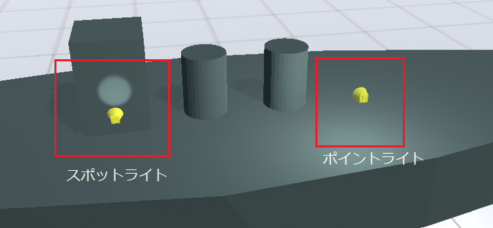

10.6. Light
Light, as the name suggests, deals with lighting in 3D space. In this application, spotlights and point lights can be operated as 3D objects among Unity lights. Directional lights are treated as main lights and are not included in this category.
- Spotlight
It is a type that illuminates a specific area. As indicated by the aforementioned properties, the range scales the distance the light reaches, and the illuminated surface angle scales the surface illuminated by the light.
- Point light
A type that illuminates a specific area with light. Scaling the distance and area covered by the light in the range, as indicated by the properties mentioned above.
Hint
Basic frequently used functions can be used as they are in the Unity editor. All the animation functions described later also support registration using the keyframe method.
Caution
Due to Unity specifications, it may not be displayed correctly if there are multiple lights. In that case, please switch one or more render modes to “Important”.
Please note that setting too many numbers to “Important” may affect the operating speed. The limit depends on the performance of your device’s CPU, graphics card, etc.